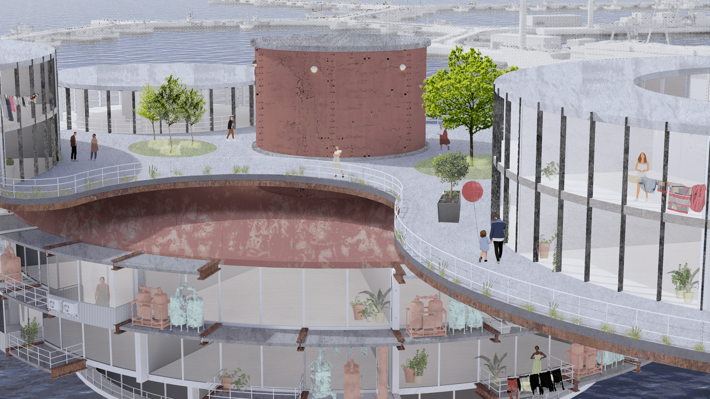
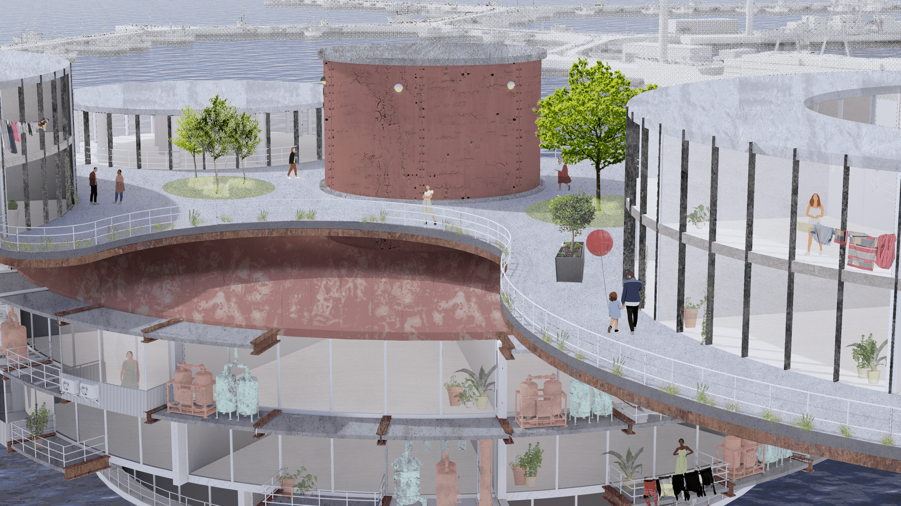

Summary
Plastics came into mass production in the 1950s, revered as a revolutionary break in material sciences. The conveniences it has brought about are immeasurable, and its pervasiveness in modern day infrastructure extend far beyond our imaginations. However, this non-biodegradable compound has infiltrated the seas, a place it does not belong in. With the rampant mismanagement of waste plastics in surrounding countries, the South China Sea (SCS) is now the greatest emitter of marine plastic accounting for 55% of the ocean’s plastic waste.
To curb the environmental degradation, this project speculates a prototypical design of a plastic processing offshore settlement located at a sea gyre in the SCS, where marine debris tends to accumulate. Nestled within the fictitious Joint Economic Zone (JEZ), the primary function of the settlement is to collect and re-purpose mismanaged waste plastics in the SCS as a political concession to present-day maritime conflicts. Set in the future, this imagined phase (2) rehabilitates people affected by the rising sea levels while establishing a new resilient economy based on waste plastics.
About Me
Yanhan is a Masters degree in Architecture student from Singapore University of Technology and Design. His personal interest in visualizations and the sci-fi genre was a big influence in the speculation of this project. The combination of having optimism of the future while acknowledging its harsh reality gives rise to the Sino-ASEAN Novel Grounds.
Name
LIM Yanhan
Mentor
Eva Castro
Typology
Speculative Futures, Inhabitable Oceans, Prototypical Strategies
Site Location
South China Sea

![]()
![]()
![]()
![]()
01_Global Issues
Garbage Gyres
Plastics have been constantly growing in popularity until environmental issues were highlighted. The fundamental issue being waste management being unable to keep up with the rate of production. So where does that lead us today?
All plastic pollutants that go into the environment eventually end up in the ocean and sea. Just 10 of the worlds rivers are accountable for 90% of the global mismanaged plastic waste and many of these are located in the South China Sea (SCS). These plastics collect themselves in garbage gyres - spiralling bodies of water trapping the waste. These plastics cause further environmental damage as they undergo mechanical degradation and form microplastics.
Geopolitics of the SCS
The project is contextualized in the SCS, a region that has been in conflict ever since the discovery of potential oil and gas basins. While the United Nations Convention on the Law of the Sea (UNCLOS) was established in 1982, setting out international marine protocols, China refuses and instead adopts its Nine-dash line as its rightful boundary. This has resulted in frequent military clashes over the sea as countries militarize the exsisting islands located in this region to claim soverign rights over the region.
Rise of Sino-Power
With unprecedented global events occuring recently especially the global pandemic, the global economy may shift. As Asia seems to being quick in their response and governed effectively, will this shift be towards the asian economies? While the interenation economy is suffering, China is constantly moving in the background during these troubling times to gain global influence. The Belt and Road Initiative (BRI), announced in 2013 is a network of land and sea corridors aimed at connecting the contents of Asia, Europe and Africa. This initiative is not new to the world. However, the large capital at China's disposal makes it difficult for countries to reject the potential economic incentive from cooperation with them.

02_Creating Fiction
Based on today's global issues, a fictional future is speculated in which the project will reside in.
The aftermath of the Covid pandemic was the start of the economic collapse United States (US). Economies throughout the world subsequently crumbled .Yet, amidst the fallout rose the next world superpower contender – China. China’s economy had been steadily increasing over the years. Overtaking the US. With the reshuffling of the global economy, the Chinese Yuan eventually overtook the US Dollar.
With the collapse of the ASEAN nations economies, they have no choice but to consider a cooperation with China to help kickstart their economy. Therefore, disputes over the SCS territory has been settled by the formation of the Sino-ASEAN As part of the agreement, a new Joint Economic Zone (JEZ) is established in the middle of the SCS; where the former disputed international waters stood. The JEZ serves as a collaborative platform for all parties of the Sino-ASEAN alliance to use. Being clustered together also facilitates trade from a common maritime ground amongst all member states – which is paramount to the restoration of economies.
My project will operate in this speculated future in the following stage below. While outlining the progress of the various stages and development of the project, the design and focus will be on stage 2: the offshore settlement.


03_Projected Narrative

Stage 1_Site
Countries for the earlier stages were profiled that faced similar issues of rising sea levels and plastic pollution to the Chinese Pearl River Delta region. The cities that were highlighted from the indexes are namely: Hanoi, Ho Chi Minh, Bangkok and Manila. These cities see alarming population under threat of being displaced and large quantities of mismanaged plastic waste.
These cities were further surveyed to estimate the population that will be displaced. Using sea level statistics, population density and poverty rates reveal that approximately 80,000 of the most vulnerable members of society are in danger within these regions.These people will become the actors of the project. With their livlihood taken away due to these issues, this project gives them another chance in improving their livelihood
Stage 2_Site
As Stage 2 moves offshore and centres around being located at a garbage gyre, indexes were mapped to narrow down the site. Starting with the South China Sea (SCS) currents. These currents were converted into speculated gyres using a metaball function.
Lastly, overlaying the joint ecnonmic zone (JEZ), shipping routes and oil rig structures reveals 6 potential sites. These 6 gyre sites will be the home of the Sino-ASEAN Novel Grounds, housing around 15,000 people in each city.
04_Infrastructural Studies
Infrastructural typologies were studied to give a better understanding of dimension and processes that were necessary in the settlement
First was a spatial and production quantities catalog generated to get an understanding of scale of components required in the settlement.
Followed by an investigation of offshore oil rigs, highlighting existing structural systems in place to survive in this marine environment. Oil rig types are based on the location, sea depth and resource extraction. Looking deeper into the structural systems, most offshore rigs will fall into any one of these 3 categories (shown on the right). Due to the depth of the SCS, a sea star structure would be the most ideal ensuring approximately controlled vertical height, which will be ideal when having a large urban settlement.
Lastly, different plastic processing methods was researched to understand the different ways waste plastic is reused. The recycling process was broken down into constituent elements to see how the process can be manipulated in the settlement. Meanwhile, pyrolysis is a method of decomposition that enables the recovery of oil from waste plastics. A potential key process to drive machinery and powerstations in the settlement.
05_Prototypical Design
Based off the above studie, a catalog of base components is developed in which the processing platform is established. These components are a prototypical strategy that aims to hybridise exsisting typologies for the settlement. The modularity of the componenets was a feature that stems from operating in the open canvas of the sea and having to operate in 6 different site in the SCS.
Using wasp as a method of agglomerating these modules. The basic hexgonal components were aggregated to help define the spatial organization of the settlement. The rules of agglomeration was adjusted to the adjacencies required for the catalog of components to function.With relevant ratios and quantities adjusted to study the outcome. Outcome 4 was subsequently chosen for its distribution of components.
Placing the catalog of components into the wasp template gives rise to the Processing Ground Condition
Below we take a look at how the catalogue of componenets are connected based on the function of the modules.


Above is a quantitative assesment of the city. This evaluation of the ground conditions, ensures the quantities of each sector was measured to fulfil the projected needs of the city.
The main mode of transportation around the different sectors of the settlement will be through the ferry service. The distribution of ferry terminals ensures the city is within 5 minutes of walking distance. Meanwhile arriving and exiting international visitors of the city go through the international immigration station located at the south of the city.
Residential Belt
Constructed over the ground condition, this red demarcation speculates the growth of residential structures. Grown incrementally, this belt is expected to house 15,000 of the displaced population.
Meanwhile, a tram service dedicated to the residential area transports people within the residential belt.
Overall the settlement is layered with the pontoon structures at the bottom keeping the city afloat. Flanked by jetties and aquaculture fish cages at sea level. This is followed by the ground platform where main community activity occurs.
The first tier of housing comprises of single residential units which emphasizes the communal aspect of the ground level. The residential tram line also runs along this level.
Above this, is the second tier of housing that caters to smaller families, giving them a greater degree of privacy and space.
Lastly, the tier 3 of housing level contains the largest residential units, community functions and green spaces. All of which is connected by its own community level.
Zooming into the housing, one thing that connects all levels is the structural core that also serves as vertical circulation. A break down of the residential units reveals varying levels of housing expansion within the tower block.
Starting with the first tier, features residential pods that plug into the structural core. The second tier enables home owners to extend their housing with various functions to fit their needs. Finally, the third tier is where a fixed building blocks are connected onto the 3rd tier community platform


 
